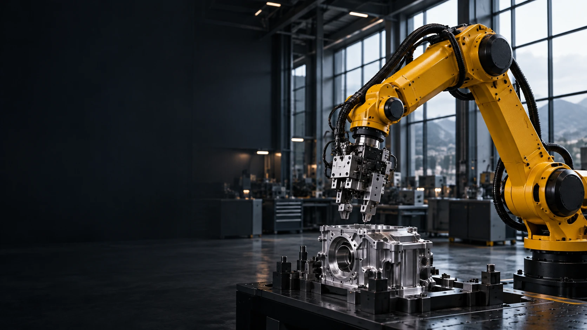

Soluzioni
Ambiti di applicazione.
Quattro problemi di produzione da cui può nascere un progetto. Ogni intervento parte dalle macchine, dai dati e dalle persone che li usano.
Efficienza operativaMonitoraggio operativo
Quando lo stato delle macchine è difficile da leggere, anche organizzare il lavoro diventa più complesso. Un sistema di monitoraggio può raccogliere i segnali utili e renderli consultabili in un unico punto.
- Individuare insieme quali dati servono davvero.
- Valutare sensori, interfacce e accesso ai segnali delle macchine.
- Progettare una vista chiara di stati, eventi e andamento dei processi.
Da valutare: disponibilità dei dati, compatibilità delle macchine e condizioni di installazione.
Una prova possibile Se i fermi brevi spariscono nel totale di fine turno, si può iniziare da una sola postazione. Confrontare una giornata di eventi con le annotazioni dell’operatore aiuta a distinguere un’attesa di materiale da un arresto da approfondire.
Prepara un brief per questo ambitoIoT e integrazioneMacchine connesse
Un dispositivo connesso mette in relazione ciò che succede sul campo con gli strumenti di chi lavora. Meccanica, elettronica e software vanno pensati come parti dello stesso prodotto.
- Definire le informazioni da scambiare e chi le utilizzerà.
- Progettare l’integrazione fisica di sensori ed elettronica.
- Valutare connettività, interfacce software e gestione degli accessi.
Da valutare: ambiente operativo, infrastruttura di rete e sistemi già presenti.
Una prova possibile Per una pompa lontana dal quadro di supervisione, una prima prova può registrare ore di marcia e arresti. Interrompere la connessione durante il test permette di verificare quali letture recuperare al ripristino e come segnalare il periodo senza dati.
Prepara un brief per questo ambitoIntelligenza artificialeControllo qualità
La visione artificiale può aiutare a riconoscere difetti o differenze nei componenti. Si parte dai campioni reali per verificare dove l’AI può supportare chi si occupa di qualità.
- Definire caratteristiche e anomalie da riconoscere.
- Raccogliere immagini rappresentative e valutarne la qualità.
- Testare un prototipo con criteri misurabili e supervisione umana.
Da valutare: illuminazione, variabilità dei pezzi, dati disponibili e precisione richiesta.
Una prova possibile Per verificare la presenza di una guarnizione, prepara campioni con guarnizione assente, corretta e fuori sede. Fotografa anche pezzi conformi con finiture diverse. In prova si contano separatamente i difetti sfuggiti e i pezzi buoni segnalati per errore.
Prepara un brief per questo ambitoEfficienza operativaAutomazione su misura
Le attività ripetitive hanno spesso esigenze molto specifiche. Un prodotto di nicchia nasce dall’osservazione del processo e combina meccanica e software nella misura necessaria.
- Osservare passaggi, tempi e vincoli dell’attività.
- Individuare le parti del processo che si prestano all’automazione.
- Realizzare un prototipo da validare nelle condizioni d’uso.
Da valutare: fattibilità, interazione con gli operatori e obiettivi del progetto.
Una prova possibile Se un operatore riposiziona a mano ogni pezzo prima del controllo, si può provare una dima con due battute. Il confronto fra i tempi di posizionamento e la ripetibilità della misura indica se conviene aggiungere un sensore o intervenire sulla geometria della dima.
Prepara un brief per questo ambito
AI applicata
Leggere i segnali
della produzione.
Una misura fuori tolleranza, un’immagine diversa dal campione, una variazione di ciclo. Scegliamo insieme quali segnali interpretare e come presentarli a chi prende le decisioni.